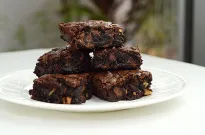

Fudgy Brownies

Description
You can never go wrong with these from scratch brownies.
Ingredients
- 1-1/3 cup plain flower
- 2 cups granulated sugar
- 3/4 cup cocoa powder (sifted)
- 1 tsp baking powder
- 1/2 tsp salt
- 1/2 cup chopped walnuts (if desired)
- 1/2 cup chocolate chips (if desired, but who wouldn't)
- 2/3 cup vegetable oil
- 4 eggs, lightly beaten
- 2 tsp vanilla extract
Instructions
- Preheat oven to 350F
-
In a bowl, add flour, sugar, cocoa, baking powder, salt, walnuts and
chocolate chips. Mix to combine.
- In another bowl, whisk together oil, eggs and vanilla.
-
Make a well in the dry ingredients and pour in the wet ingredients. Mix
until just combined. Do not overmix
-
Spread in a 13x9 inch baking pan, well greased.
For virtually no mess, line with baking paper.
-
Bate for 20-25 minutes, or until toothpick inserted in center comes out
clean.
If you like your brownies extra fudgy, reduce baking time by a few
minutes.